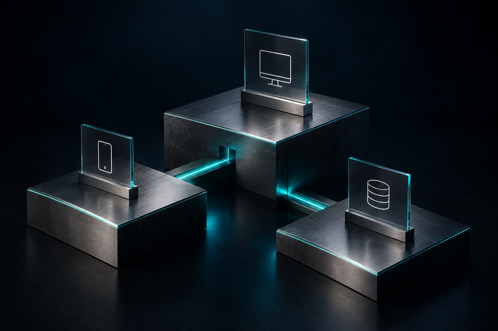

01 /
Mobile applications
Android and iOS applications with clear journeys, maps, notifications and backend integration. Every screen is part of a complete product.
Explore mobile projectsSoftware development company · Kosovo
We build mobile apps, business platforms and interactive digital experiences. From architecture and design to the code that makes it all work.

What we build
One connected experience, from interface to infrastructure.
Android and iOS applications with clear journeys, maps, notifications and backend integration. Every screen is part of a complete product.
Explore mobile projectsPortals, dashboards and business tools that make everyday work simpler, on desktop and on the move.
Explore business platformsConnect products, data and processes. Backend architecture with clear roles, deliberate workflows and maintainable integrations.
Discuss your systemSelected projects
From mobility and business operations to interactive learning and connected infrastructure. A closer look at the software we are building.
One platform. Every part of the journey.
A connected ride-hailing system with dedicated rider and driver apps, dispatch oversight and an administrative workspace. Booking, location, trip status and cash-fare workflows share the same operational backbone.
A dance school, in sync.
A management platform connecting students, families, trainers and courses. Scheduling, attendance, contracts and invoicing come together in one back office built around the daily work of a dance school.
From workshop request to reviewed delivery.
A B2B ECU file-service platform for professional workshops. Dealer accounts, original-file uploads, order tracking, messages and a credit ledger connect the workshop to an administrator-led review and release workflow.
Learning becomes an adventure.
An Albanian-language learning world that brings exploration, characters and educational challenges into a playable 3D experience. Language and mathematics activities are supported by progress tracking and a growing content platform.
A connection with more possibilities.
A guest-access and campaign-management project for venues. The web platform explores branded guest portals, scheduled media and venue reporting, alongside a separate network lab for captive-portal access control.
Structured AI. Accountable delivery.
A control workspace for AI-assisted software development. Requests become versioned requirements, scoped tasks and reviewable work, with a Scrum board, execution records and explicit human approval at decision points.
Complex records. A clearer workflow.
A desktop-oriented records tool for organising commissioners, observers and replacements. Document imports, field review, duplicate checks and template-based Excel exports reduce repetitive administrative steps.
Selected work at different stages of development. The interface illustrations above explain each product; they are not live application screens.
How we work
PREJ is a software development company from Kosovo, led by Xhevdet Ferizi. We bring architecture, product design and engineering together to build complete systems: the application, the workspace, the APIs and the data behind them. You work directly with the person accountable for the technical direction.
Discover our projectsStart with the problem, the people and the real constraints. Agree on scope and what success looks like.
Outcome: a clear planTurn ideas into interfaces and working systems, with reviewable increments and direct communication.
Outcome: visible progressTest the journeys, review the behaviour and prepare the handover. Define ongoing support around the project's needs.
Outcome: a considered handoverThe architect directs a workflow with eight AI agent roles: six specialist roles, one for the product backlog and one for Scrum coordination. These are assistive tools; decisions, review and accountability remain human.
Inside our process
The video could not be played here. Open it directly.
Our core stack
We choose technology around the product and its long-term maintenance. These are the core technologies in our work; other requirements are assessed per project.
Let's build together
Tell us what you want to build, or what needs to work better. We'll start with a clear conversation.
Founder & engineering lead